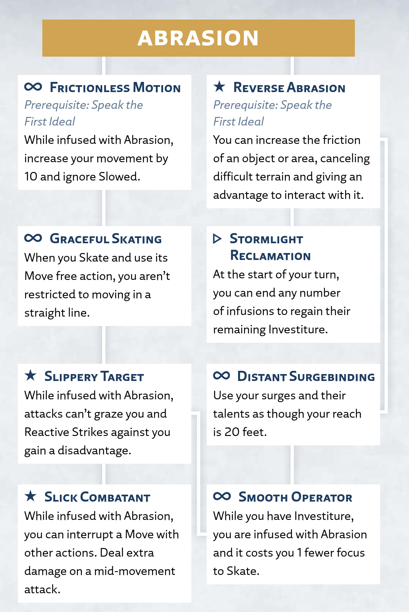

Abrasion
Speed
The surge of Abrasion alters the frictional force on an object's surface, usually by nearly eliminating it.
Abrasion Surge
Radiant Orders: Dustbringer, Edgedancer
Activation: ▶
Spend 1 Investiture or more to infuse an object or portion of a surface within your reach, making it nearly frictionless; to do so, you must have a hand free and touch the target. This infusion uses 1 Investiture each round, and for the duration, the object or surface slides freely.
This target can't exceed the surge size for your ranks in Abrasion (see the Surge Scaling table at the beginning of this chapter).
You can't use this surge on other characters, Invested objects (like Shardplate), or objects that have been infused with Stormlight (like infused spheres or objects affected by surges).
Alternatively, you can infuse your body with Abrasion, regardless of your size, spending 1 Investiture each round to maintain the surge. While infused, you can freely change which parts of your body are frictionless, and you can use Skate and Slide until the surge ends:
▷ Skate. You can skate across the ground as if it were ice. Spend 2 focus to Move (as ▷) in a straight line on the ground. You can accomplish this frictionless movement without practice—though you'll need experience to do it gracefully!
∞ Slide. You instinctively remove friction from parts of your body to more easily slide over obstacles or escape bonds. You count as one size smaller when squeezing through spaces, and you gain an advantage on tests to escape restraints that hold you via friction or pressure.
Using Abrasion
In addition to the basic surge rules above, this section provides more guidance on using or interacting with this surge in your game.
Abrasion on Others
While you can't directly target other characters with Abrasion, you can target objects they're holding or wearing. If a character is willing, you can easily infuse objects in their possession.
To infuse an object held by an unwilling character or to infuse a surface that's supporting most of their weight (such as the ground they're standing on or a wall they're climbing), you must succeed on an Abrasion test against the target's Physical defense. On a failure, you don't infuse that object and you don't spend Investiture on the attempt.
Interacting With Slick Surfaces
When another character steps on or otherwise interacts with a surface or object you made slick with Abrasion, it's difficult to stay on their feet or hold on to the slippery object. The character must make an Agility test opposed by your Abrasion. If they succeed, they stay on their feet or hold on to the object; otherwise, they fall Prone or drop the object.
Abrasion Talent Tree
Abrasion Talents
The following talents, presented here in alphabetical order, appear in the Abrasion talent tree for the Dustbringer and Edgedancer paths.
Distant Surgebinding
Prerequisite: Reverse Abrasion talent
Activation: ∞
You can infuse targets from a greater distance.
You can use your surges and their talents as though your reach is 20 feet, and you don't need to touch the target.
Frictionless Motion
Prerequisite: Speak the First Ideal
Activation: ∞
You become increasingly adept at using Abrasion to glide through your environment.
While infused with Abrasion, your movement rate increases by 10 feet, and you ignore the Slowed condition when imposed by difficult terrain, climbing, crawling, and swimming.
Graceful Skating
Prerequisite: Frictionless Motion talent
Activation: ∞
You dynamically skate around the battlefield, easily slipping away from your foes.
When you Skate, you aren't restricted to moving in a straight line.
Reverse Abrasion
Prerequisite: Speak the First Ideal
Activation: ★
Instead of making objects frictionless with Abrasion, you can now increase friction.
When you infuse an object or surface with Abrasion, you can choose to increase the infused target's friction instead of reducing it, making it easier to grip and traverse. When a character interacts with such an object, they gain an advantage on Agility and Athletics tests made to do so. When a character moves across such a surface, they ignore any Slowed condition the surface would normally apply (such as due to climbing or difficult terrain).
Slick Combatant
Prerequisite: Slippery Target talent
Activation: ★
You are poetry in motion, able to perform nearly any feat without slowing down.
When you Skate or otherwise Move while infused with Abrasion, you can interrupt your movement at one or more points, use other actions as if you'd finished your Move, then use your remaining movement as if you were still in the middle of that Move action.
Once per round, when you make a melee weapon attack after starting that Move but before finishing it, you can roll an extra 1d4 damage for that attack. The size of this die increases with your ranks in Abrasion: at 2 ranks, roll an extra 1d6 damage (instead of 1d4), and so on. However, if you add this damage die, the GM can spend ✧ from the attack test to cause you to fall Prone and immediately end your Move action.
Slippery Target
Prerequisite: Graceful Skating talent
Activation: ∞
You make yourself so slick that glancing and hasty blows slide right off you.
While you are infused with Abrasion, attacks can't graze you and Reactive Strikes against you gain a disadvantage.
Smooth Operator
Prerequisite: Distant Surgebinding talent or Slippery Target talent
Activation: ∞
You've become so efficient at infusing yourself with Abrasion that it becomes subconscious, allowing you to slip around with effortless grace.
While you have 1 Investiture or more, you gain the benefits of being infused with Abrasion without spending Investiture, and it costs you 1 fewer focus to Skate.
Stormlight Reclamation
Prerequisite: Reverse Abrasion talent
Activation: ▷
You can reclaim Stormlight from active infusions.
After your infusions expend their infused Investiture at the start of your turn, you can end any number of those infusions within your reach, recovering all remaining Investiture they were infused with.